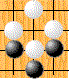

Table Of Contents
Table Of ContentsThis is the last rule to remember. If you read this page, then you will understand all the rules of Go.
The concept of Ko is a little more difficult than the rules described so far.
Good luck!
|
* White doesn't respond here. |
One white stone is in Atari. Get it!
You got it? Then watch the board carefully. You will see a black stone that you have just put is in Atari! What will happen if white does it? Therefore, the moves which produce the same board position are prohibited.
In the board above, you can also make moves for white. Thus, try to
take the black stone in the middle.
|
He can. But he must play somewhere else first.
That way it will produce a different board position. Therefore, you can take
the Ko stone back once you play somewhere else.
Make a move wherever you like for white on the above board.
And make a move again for black in the same way.
Now, it is white's turn again. White now can take a black stone back again.
Just make sure on the board above.
Then it's black's turn. However, she can't get white back immediately.
Please make sure on the board. You will see the message - Illegal(Ko).
She can get the stone again once she makes a move on other places as white did.
On the board above, you can make moves for both black and white.
Please understand the concept of Ko prohibition rule by playing there.
You can undo your moves by pressing the undo button.
|
|
How does Ko appear in a real battle?
Look on the left. Five black stones on the upper side are about to die. The five white stones are now in danger and white can't take a black stone by playing D8 because it is prohibited by the Ko rule. Thus, he plays somewhere black can't ignore such as E2.
Now, white is able to get the Ko stone back by D8 We call this a Ko fight.
|
The important thing is: to win the Ko fight, find the threat - the place where you can gain a lot by making 2 successive moves . If the opponent doesn't allow it, the Ko fight continues. If he ignores your threat, you can make 2 successive moves while your opponent wins the Ko.
 This animation is provided by courtesy of Daniel Dheaud.
That is, Ko rule does not allow this situation to happen.
Ko is not just a restrictive rule but it also makes Go more exciting.
 Next
Next Home
Home